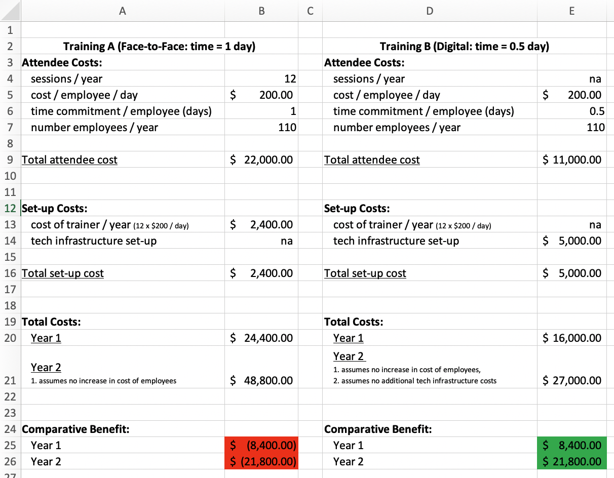

Differences in Training Outcomes
The decision we are trying to inform here is: in which training format should we invest?
The context is simple. The organisation has introduced a new digital (i.e., online e-training) for new starters. The new digital training takes half a day to complete. The traditional model of training delivery was a full-day of face-to-face activity.
The company wants to understand which training format to commit to in future. Enter People Analytics Team!
Workflow
The workflow is as follows:
INGEST: We began by ingesting the end-of-course assessment data from the training (previously collected). The data was from a random selection of participants that have completed the training in one of the training formats (i.e., face-to-face or digital).
ANALYSE: From there we analysed the end-of-course assessment results. This was done using some basic descriptive statistics and a simple Independent Samples t-test. Prior to performing the t-test we completed an assessment of the t-test assumptions.
VISUALISE: We visualised the results obtained from the two training formats to make it easier for our audience to interpret and understand,
QUANTIFY: Finally, we quantified the benefits of the optimal approach.
The R code for this analysis is presented below, following the workflow steps above. In addition, some guidance regarding the steps and interpretation of the outcomes are provided. We have used namepsacing throughout to illustrate which packages are being used for any given function call. While this helps to ensure the accuracy of our code, it also facilitates learning and ease of understanding for fellow practitioners.
1. Ingesting Data
The first code chunk is fairly simple. We load our packages, read in our assessment results, clean the variable names, and finally take a simple look at the structure of the data to see what we are working with.
Code
# load the packages we will use for this workflow
library(tidyverse) # workhorse
library(readxl) # ingesting our data
library(janitor) # cleaning variable names
library(rstatix) # performing t-tests
library(ggpubr) # simple boxplots
# Ingest our training assessment results
assessment_results_tbl <- readxl::read_excel(path = "training_data.xlsx") %>%
janitor::clean_names()
# Get a feel for the data and its structure
dplyr::glimpse(assessment_results_tbl)Rows: 27
Columns: 2
$ training <chr> "A", "A", "A", "A", "A", "A", "A", "A", "A", "A", "A", "A", "…
$ result <dbl> 56, 50, 52, 44, 52, 47, 47, 53, 45, 48, 42, 51, 42, 43, 44, 5…A key point to note is that in the “training” variable a response of “A” equates to the traditional face-to-face delivery mode, while “B” equates to the new digital learning format.
2. Analysing Data
The analysis comprised the following steps:
Firstly, we performed a quick exploration of the data by getting some summary statistics.
Secondly, we performed our t-test to determine if statistically significant differences existed in assessment outcome scores achieved by the two training formats.
These two steps are performed sequentially.
Step 1.
Code
# 2a. get some summary stats
descriptive_stats_tbl <- assessment_results_tbl %>%
dplyr::group_by(training) %>%
rstatix::get_summary_stats(result, type = "mean_sd")
descriptive_stats_tbl# A tibble: 2 × 5
training variable n mean sd
<chr> <chr> <dbl> <dbl> <dbl>
1 A result 15 47.7 4.42
2 B result 12 56.5 4.28Interpretation
Our descriptive statistics indicate an interesting outcome. It appears a notable difference exists between training formats in the mean score achieved on the assessment outcome, Training B (digital) seems to achieve on average a higher score (56.5) than Training A (face-to-face). However, the question remains–is this difference statistically significant?
Step 2.
Before we can perform the t-test we must check several assumptions to ensure a t-test is appropriate. The assumptions are as follows:
| Assumption | Outcome |
|---|---|
| 1. The data are continuous (not discrete). | Our assessment outcomes scores are continuous - CHECK |
| 2. The data follow the normal probability distribution. | We will test for normality using a Q-Q plot (Quantile-Quantile plot) and the Shapiro-Wilk’s test. |
| 3. The variances of the two populations are equal. | We will test for equal variance using the Levene Test. |
| 4. The two samples are independent. | Our training participants could only participate in one type of training (i.e., face-to-face or digital) so our samples are independent - CHECK |
| 5. Both samples are simple random samples from their respective populations. | Our participant results were randomly selected for analysis - CHECK! |
If the data is normally distributed and the variance across the two groups (e.g. Training Groups A & B) are equal then a t-test can be used effectively. Let’s check the last two assumptions and then analyse the data!
Code
# 2b. Normality Tests
ggpubr::ggqqplot(assessment_results_tbl$result,
title = "Normality Assessment") %>%
plotly::plotly_build()Code
rstatix::shapiro_test(assessment_results_tbl$result)# A tibble: 1 × 3
variable statistic p.value
<chr> <dbl> <dbl>
1 assessment_results_tbl$result 0.958 0.338Code
# 2c. Equal Variance - levene's test
levene_test(result ~ training, data = assessment_results_tbl)# A tibble: 1 × 4
df1 df2 statistic p
<int> <int> <dbl> <dbl>
1 1 25 0.242 0.627Code
# 2d. perform the t-test
(t_test_tbl <- assessment_results_tbl %>%
rstatix::t_test(formula = result ~ training, var.equal = TRUE) %>%
rstatix::add_significance())# A tibble: 1 × 9
.y. group1 group2 n1 n2 statistic df p p.signif
<chr> <chr> <chr> <int> <int> <dbl> <dbl> <dbl> <chr>
1 result A B 15 12 -5.20 25 0.0000223 **** Interpretation
Normality Our QQ plot suggests that we can assume normality. The distribution of results are falling approximately along the reference line and within the bounds. However, the QQ plot can be sensitive to small sample sizes. To further validate normality we performed the Shapiro Wilk’s test. This test again suggests that the data are normally distributed, as the p-value (0.338) is greater than 0.05. We can assume normality!
Equal Variance We use the levene’s test to determine whether both the training methods have an approximately equal variance. Since our p-value (0.627) is greater than 0.05 we can assume that the variance in outcome assessments scores is not statistically significantly different for the two training methods. We can assume equal variance! All our assumptions are met and we can perform the t-test.
t-test The t-test indicates that the difference is highly significant (p-value = 0.0002); well below a cut-off of 0.01. This difference is extremely unlikely to be by chance alone and suggests that the digital training yields a better outcome, at least as defined by the assessment outcomes.
3. Visualising Results
Our next step is to visualise the differences achieved by the two training formats. The intent here is to ensure our stakeholders can clearly appreciate that a notable difference exists, and subsequently take an investment decision with confidence. To illustrate the difference observed, we opted to use a Box-Plot, which displays the distribution of scores in each group, coupled with some descriptive statistics. As with our QQ plot, we have used the Plotly package to make the plot interactive.
Code
# 3. visualise the results from the two training methods
training_plot <- assessment_results_tbl %>%
ggpubr::ggboxplot(x = "training",
y = "result",
fill = "training",
xlab = "Training Delivery Format",
ylab = "Assessment Result")
t <- list(
family = "arial",
size = 12)
# make the graph interactive
plotly::plotly_build(training_plot) %>%
plotly::layout(title = "<b>Difference in Assessment Results by Training Delivery Format</b>",
font = t,
showlegend = FALSE) Interpretation
Our visualisation seeks to clearly illustrate that employees who completed the digital training performed better on the end-of-course assessment. This may suggest that the digital training results in better knowledge retention (i.e., they are learning more).
The line crossing each box on the boxplot indicates the median score of each training format. The median is the middle value achieved on the assessment results for each training format. There is a clear difference between the two groups when comparing these lines. This is worth calling out when delivering the results to stakeholders.
4. Quantifying Benefit
There are two key ways in which we can further quantify the differences of the training formats:
The percentage change in performance. We have identified the gain is statistically significant and visualised the difference above. We can make this increase in performance more accessible to a broader audience by indicating the performance gain as a percentage.
The cost difference of the delivery formats. By calculating the cost difference of delivering the training over a year or more for the two formats.
On the basis of these two metrics we are in a better position to recommend a future course of action.
Performance Efficiency
Using the mean score from each training group we can calculate the % gain in performance. The code is presented in the code chunk below.
Code
# 4. quantify the benefit
# mean assessment score for f2f training
train_A_mean <- descriptive_stats_tbl %>%
dplyr::filter(training == "A") %>%
pull(mean)
# mean assessment score for digital training
train_B_mean <- descriptive_stats_tbl %>%
dplyr::filter(training == "B") %>%
pull(mean)
# calculate % increase in performance
(pct_increase = ((train_B_mean - train_A_mean)/ train_A_mean) %>% scales::percent())[1] "18%"Cost Efficiency
Below is an except from an excel spreadsheet in which we have detailed costs associated with both training formats.
Code
knitr::include_graphics("training_costs_3.png")
Interpretation
Our performance gains are straightforward–digital training results in end of course assessment scores that are 18% higher than traditional face-to-face delivery. This kind of result is accessible to all audiences, and is compelling! In addition, we are confident that the result is a function of the training delivery format based on the results of our t-test.
Our simple cost assessment also creates a compelling picture of the financial savings associated with digital training. In one year we stand to create $8,400 in savings if we move to a digital format, and this increases to $21,800 at the end of two years.
Recommendation
Our recommendation is to invest in the Digital Training! Our rationale:
- Digital training is more effective! Digital training yields 18% better performance outcomes on the end of course assessment. This result is statistically significant, and more importantly practically significant, as it better sets up our new starters for success!
- Digital training is cheaper! Digital training costs $21,800 less than face-to-face training over a 2 year period. In addition, in each year we have an indirect benefit of giving 110 employees a half day back to invest in other activities!
- Digital training is more scaleable! Digital training can support an unlimited number of participants should recruitment numbers increase for any reason. The ability to accommodate increased numbers of participants also has cost implications (i.e., face-to-face becomes more expensive), further reinforcing the cost benefit of the digital training approach.
- Digital training is more flexible! Digital training is not limited by pandemic conditions, and affords employees with more flexibility, a message worth reinforcing early in the careers of new starters!
Further time could be invested to speak with employees that recently completed the two training formats to validate the results identified and the recommendation provided.
Conclusion
The above case study provides a simple example of using People Analytics to inform a HR investment decision. We used R to analyse training results, determine whether statistically significant differences existed in outcome scores, visualised the results and then quantified the benefit of the respective training modes. Collectively, the analytic evidence suggested a clear investment decision, which could be augmented with user experience feedback. Happy measuring!
Reuse
Citation
BibTeX citation:
@online{dmckinnon2021,
author = {Adam D McKinnon and Sambit Das},
title = {Measuring {Impact} in {HR:} {A} {Practical} {Demonstration}},
date = {2021-06-06},
url = {https://www.adam-d-mckinnon.com//posts/2021-02-05-group_impact},
langid = {en}
}
For attribution, please cite this work as:
Adam D McKinnon, and Sambit Das. 2021. “Measuring Impact in HR: A
Practical Demonstration.” June 6, 2021. https://www.adam-d-mckinnon.com//posts/2021-02-05-group_impact.